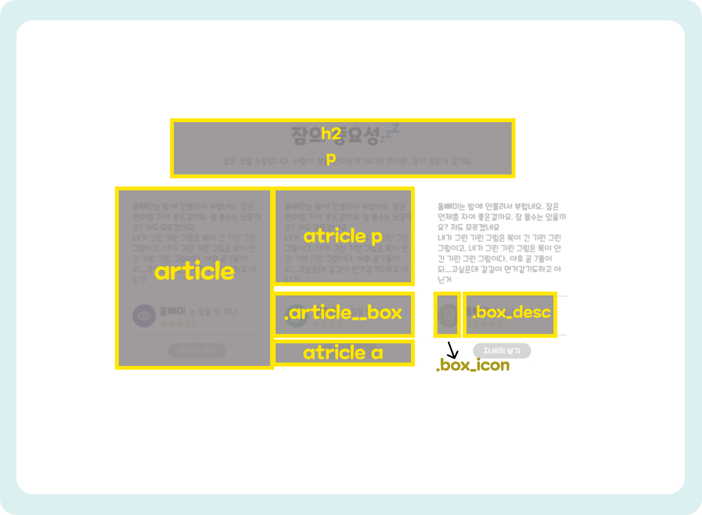
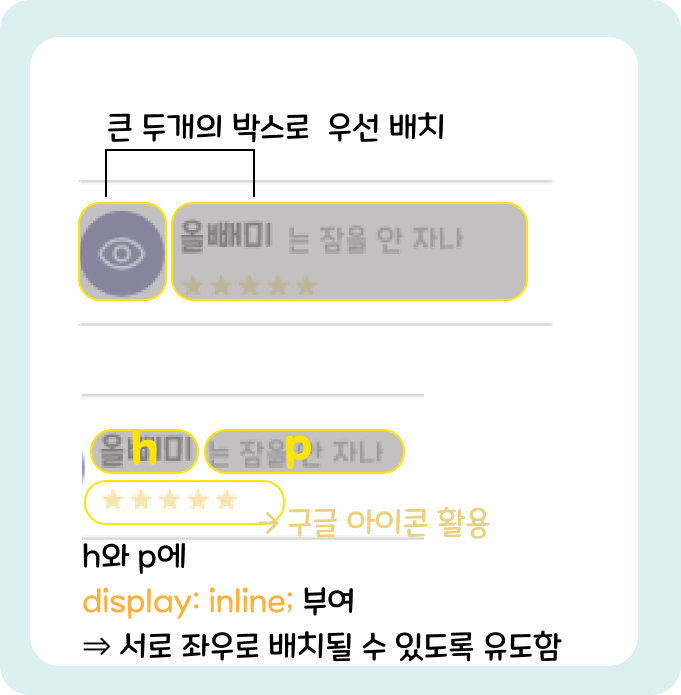
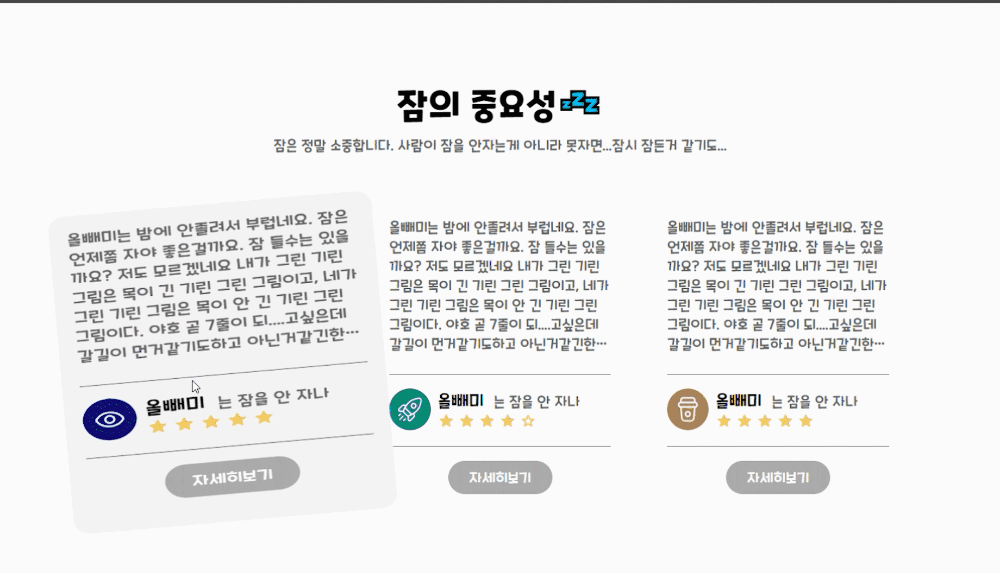

사이트 만들기 _ 텍스트 유형03
이번 시간은 텍스트 유형 세번째 시간입니다. 이번엔 제가 임의로 만든 사이트라서 제가 여러가지 실험 아닌 실험을 많이한 사이트네요. 같이 가보시죠
■ 그림으로 미리보기🎨
■ 핵심내용✍
ir효과와 이미지스프라이트효과에 대한 설명은 또 할 이유가 있을까요ㅎㅎ패스하겠습니다.
<link rel="stylesheet" href="https:......200" />
<span class="material-symbols-rounded" style="color:#F1CB64;">star</span>
<span class="material-symbols-rounded" style="color:#F1CB64; font-variation-settings: 'FILL' 0">star</span>
오늘의 피그마를 보시면 별점을 메기는 박스가 있었는데요. 세개의 박스에 전부 같은 별점그림이면 이미지태그를 썼겠지만
하나는 별점이 4개라서 두개의 이미지로 저장해서 또 넣기는 조금 비효율적인것 같더라구요!그래서 저는 이걸 이미지말고 또 색다른 방법으로 구현을 해보고 싶더라구요.
(근데 이게 웹표준을 준수할 수 있는 방법일지...😶)
아.무.튼! 단순하게 이미지파일로 하는것이 아니라 구글에 있는 아이콘을 CDN링크를
통해서 불러오고 CSS속성에서 제가 컨트롤할 수 있도록 CSS삽입 방식으로 가져와서 작업을 했습니다.
원본은 색이 채워진 별모양인데요. 이러한 방법은 정해진 이름만을 사용해야만 잘 작동하는 단점이 있더라구요.
제가 이방법을 쓴 이유는 사실 색을 맘대로 채워넣고 색을 빼버리기 위해서 사용한 것입니다. CSS 스타일 부여는 태그에 직접 작성하는게
가장 0순위로 센놈이기 때문에 빈 별엔제가 직접 font-variation-settings:'FILL' 0"를 적용시켜 색을 빼버린것이죠.
이렇게 하면 이 사이트는 공부용이라 유지보수 할일은 없겠지만 추후에 유지보수를 할때는 편할 것 같네요!
.article__box에 두개로 나누어서 작업하기
말로 설명이 힘들어서 그냥 그림으로 설명을 대체하고 싶네요. 그래도 간략하게 설명드리자면 아이콘이 있는 부분과 내용(제목, 글, 별점)이 들어갈 부분을 두개로 나눈 뒤 flex를 활용해 나란히 배치 후 내용부분에서 다시한번더 안의 내용들의 배치를 해주는 방식으로 진행했습니다.

article:hover {
background-color: #f5f5f5;
border-radius: 20px;
animation: spin 1s;
}
@keyframes spin{
0%{transform: rotate(0deg) scaleX(1);}
10%{transform: rotate(-5deg)scaleX(1.3);}
30%{transform: rotate(5deg)scaleX(1.1);}
50%{transform: rotate(-5deg) scaleX(1.3);}
70%{transform: rotate(5deg)scaleX(1.1);}
100%{transform: rotate(0deg)scaleX(1);}
}
오버효과를 주었는데요. 좌우로 살짝씩 흔들리면서 양옆으로 조금씩 퍼져보이게 작업했습니다. 좌우 회전효과를 위해서 ratate를 사용했고 퍼지는 효과는 scaleX를 사용해서 좌우로만 퍼지게끔 작업했습니다.
CSS 속성
/* fonts */
@import url('https://webfontworld.github.io/cookierun/CookieRun.css');
.cookie {
font-family: 'CookieRun';
font-weight: 400;
}
/* 리셋 */
*{
margin: 0;
padding: 0;
}
a{
text-decoration: none;
color: #000;
}
img {
width: 100%;
}
h1, h2, h3, h4, h5, h6 {
font-weight: normal;
}
/* common */
.container {
width: 1160px;
padding: 0 20px;
margin: 0 auto;
min-width: 1160px;
}
.section {
padding: 120px 0;
}
.section > h2 {
font-size: 50px;
line-height: 1;
text-align: center;
margin-bottom: 20px;
font-weight: 700;
}
.section > p {
font-size: 20px;
color: #666;
text-align: center;
margin-bottom: 70px;
}
.ir{
overflow: hidden;
position: absolute;
width: 0;
height: 0;
line-height: 0;
text-indent: -9999px;
}
/* textType */
.text__inner{
display: flex;
flex-wrap: wrap;
justify-content: space-between;
}
article{
width: 31%;
box-sizing: border-box;
padding: 20px;
}
article:hover {
background-color: #f5f5f5;
border-radius: 20px;
animation: spin 1s;
}
@keyframes spin{
0%{transform: rotate(0deg) scaleX(1);}
10%{transform: rotate(-5deg)scaleX(1.3);}
30%{transform: rotate(5deg)scaleX(1.1);}
50%{transform: rotate(-5deg) scaleX(1.3);}
70%{transform: rotate(5deg)scaleX(1.1);}
100%{transform: rotate(0deg)scaleX(1);}
}
article p {
font-size: 20px;
color: #666;
margin-bottom: 30px;
overflow: hidden;
text-overflow: ellipsis;
display: -webkit-box;
-webkit-line-clamp: 7;
-webkit-box-orient: vertical;
}
article .article__box{
border-top: #666 solid 1px;
border-bottom: #666 solid 1px;
padding: 20px 0;
display: flex;
flex-wrap: wrap;
}
article .article__box .icon{
background: url(../textType/img/text_type03.svg) no-repeat;
width: 60px;
height: 60px;
border-radius: 50%;
margin-right: 10px;
}
.text__inner article:nth-child(2) .article__box .icon{
background-position: -100px 0;
}
.text__inner article:nth-child(3) .article__box .icon{
background-position: -200px 0;
}
article .article__box .box_desc h3{
margin-right: 10px;
display: inline;
font-size: 24px;
margin-bottom: 10px;
}
article .article__box .box_desc p{
display: inline;
}
article a{
background-color: #ACACAC;
display: block;
width: 150px;
padding: 10px 0;
text-align: center;
margin: 20px auto;
border-radius: 50px;
font-size: 20px;
color: white;
}
.material-symbols-rounded {
font-variation-settings:
'FILL' 1,
'wght' 400,
'GRAD' 0,
'opsz' 48;
font-size: 25px;
}
HTML 속성
<link rel="stylesheet" href="https://fonts.googleapis.com/css2?family=Material+Symbols+Rounded:opsz,wght,FILL,GRAD@20..48,100..700,0..1,-50..200" />
<!-- 아이콘링크, head 내부 style보다 위에 작성할것! -->
<section id="textType03" class="text__wrap cookie section">
<h2>잠의 중요성💤</h2>
<p>잠은 정말 소중합니다. 사람이 잠을 안자는게 아니라 못자면...잠시 잠든거 같기도...</p>
<div class="text__inner container">
<article>
<p>
올빼미는 밤에 안졸려서 부럽네요. 잠은 언제쯤 자야 좋은걸까요. 잠 들수는 있을까요? 저도 모르겠네요
내가 그린 기린 그림은 목이 긴 기린 그린 그림이고, 네가 그린 기린 그림은 목이 안 긴 기린 그린 그림이다. 야호 곧 7줄이 되....고싶은데 갈길이 먼거같기도하고 아닌거같긴한데 일곱줄효과를 위해 대충적자
</p>
<div class="article__box">
<div class="box_icon">
<div class="icon"><span class="ir">icon</span></div>
</div>
<div class="box_desc">
<h3>올빼미</h3>
<p>는 잠을 안 자나</p>
<div>
<span class="material-symbols-rounded" style="color:#F1CB64;">star</span>
<span class="material-symbols-rounded" style="color:#F1CB64;">star</span>
<span class="material-symbols-rounded" style="color:#F1CB64;">star</span>
<span class="material-symbols-rounded" style="color:#F1CB64;">star</span>
<span class="material-symbols-rounded" style="color:#F1CB64;">star</span>
</div>
</div>
</div>
<a href="#">자세히보기</a>
</article>
<article>
<p>
올빼미는 밤에 안졸려서 부럽네요. 잠은 언제쯤 자야 좋은걸까요. 잠 들수는 있을까요? 저도 모르겠네요
내가 그린 기린 그림은 목이 긴 기린 그린 그림이고, 네가 그린 기린 그림은 목이 안 긴 기린 그린 그림이다. 야호 곧 7줄이 되....고싶은데 갈길이 먼거같기도하고 아닌거같긴한데 일곱줄효과를 위해 대충적자
</p>
<div class="article__box">
<div class="box_icon">
<div class="icon"><span class="ir">icon</span></div>
</div>
<div class="box_desc">
<h3>올빼미</h3>
<p>는 잠을 안 자나</p>
<div>
<span class="material-symbols-rounded" style="color:#F1CB64;">star</span>
<span class="material-symbols-rounded" style="color:#F1CB64;">star</span>
<span class="material-symbols-rounded" style="color:#F1CB64;">star</span>
<span class="material-symbols-rounded" style="color:#F1CB64;">star</span>
<span class="material-symbols-rounded" style="color:#F1CB64; font-variation-settings:
'FILL' 0">star</span>
</div>
</div>
</div>
<a href="#">자세히보기</a>
</article>
<article>
<p>
올빼미는 밤에 안졸려서 부럽네요. 잠은 언제쯤 자야 좋은걸까요. 잠 들수는 있을까요? 저도 모르겠네요
내가 그린 기린 그림은 목이 긴 기린 그린 그림이고, 네가 그린 기린 그림은 목이 안 긴 기린 그린 그림이다. 야호 곧 7줄이 되....고싶은데 갈길이 먼거같기도하고 아닌거같긴한데 일곱줄효과를 위해 대충적자
</p>
<div class="article__box">
<div class="box_icon">
<div class="icon"><span class="ir">icon</span></div>
</div>
<div class="box_desc">
<h3>올빼미</h3>
<p>는 잠을 안 자나</p>
<div>
<span class="material-symbols-rounded" style="color:#F1CB64;">star</span>
<span class="material-symbols-rounded" style="color:#F1CB64;">star</span>
<span class="material-symbols-rounded" style="color:#F1CB64;">star</span>
<span class="material-symbols-rounded" style="color:#F1CB64;">star</span>
<span class="material-symbols-rounded" style="color:#F1CB64;">star</span>
</div>
</div>
</div>
<a href="#">자세히보기</a>
</article>
</div>
</section>